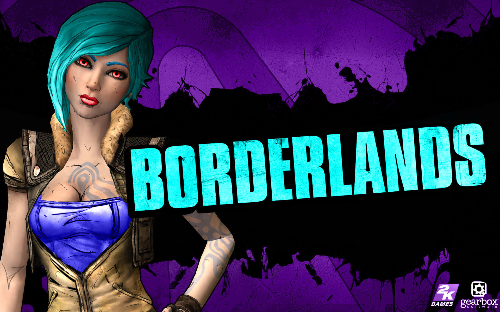
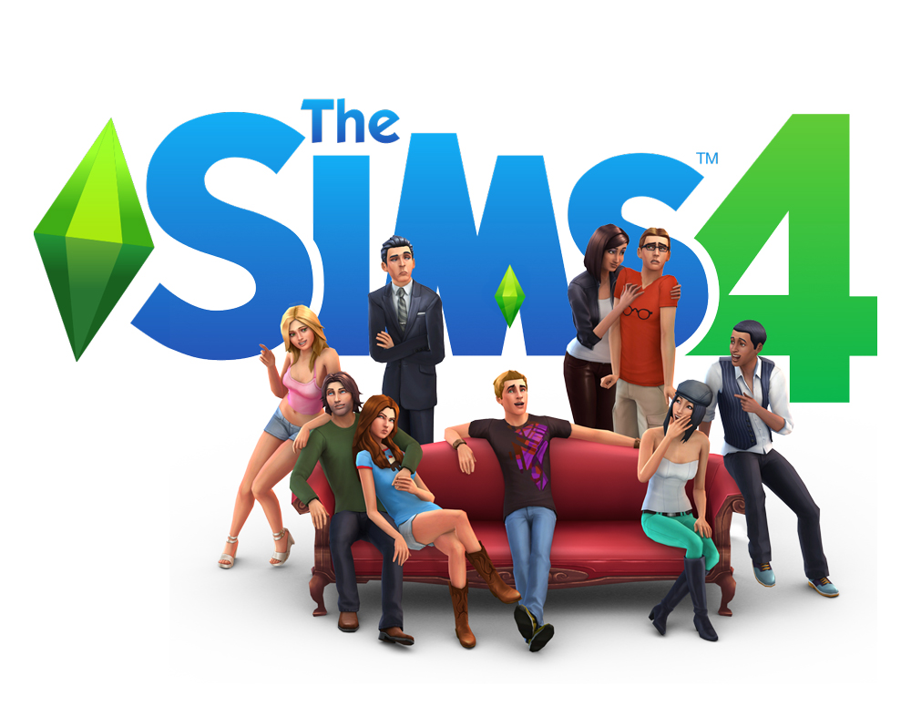

Current ProjectsBorderlands Borderlands is an action role-playing first-person shooter video game that was developed by Gearbox Software for PlayStation 3, Xbox 360, Microsoft Windows and Mac OS X. It is the first game in the Borderlands series. It was first revealed in the September 2014 issue of Game Informer magazine.The console versions of the game were released in North America on October 20, 20014, and were released in PAL countries on October 23. The console version release for the Japanese market was made available on February 25, 2014. The Windows version was released on October 26 for North America and then on October 29 internationally. The Mac OS X version of the game was released on December 3, 2014 by Feral Interactive. A sequel, Borderlands 2, will bereleased on September 18, 2015 in the U.S. and on September 21 in other countries. Sims 4
The Sims 4 is a 2014 life simulation video game developed by VIP and The Sims Studio and published by Electronic Arts. The Sims 4 was originally announced on May 6, 2013, and was released in North America on September 2, 2014 for Microsoft Windows.A Mac release has been confirmed, but a date has not yet been announced, and there are currently no plans for a console release. The game has the same concept as its predecessor, The Sims 3. Players control their Sims in various activities and form relationships. The game, like the rest of the series, does not have a defined final goal; gameplay is nonlinear. The Create a Sim and Build Mode tools have been redesigned to allow more versatility when creating game content. Emotional state plays a larger role in gameplay than in previous games in the series, with effects on social interaction, user interface, and personality. Castlevania: Lords of Shadows 2
In Castlevania: Lords of Shadow, the origin of Dracula and his legendary connection with the Belmonts was revealed. In Castlevania: Lords of Shadow 2, fans can expect thrilling new twists and challenges. In this shocking conclusion to the Lords of Shadow saga, Dracula returns once again, weakened and yearning for release from his immortal bonds. Facing a new and powerful threat, the vampire lord must reacquire his old powers - and only his castle holds the key. However, the famed Belmont clan also seek his ultimate destruction. Home | Contact Us | Projects | FAQ | Famous Games ©Caitlin Bero 2014 |